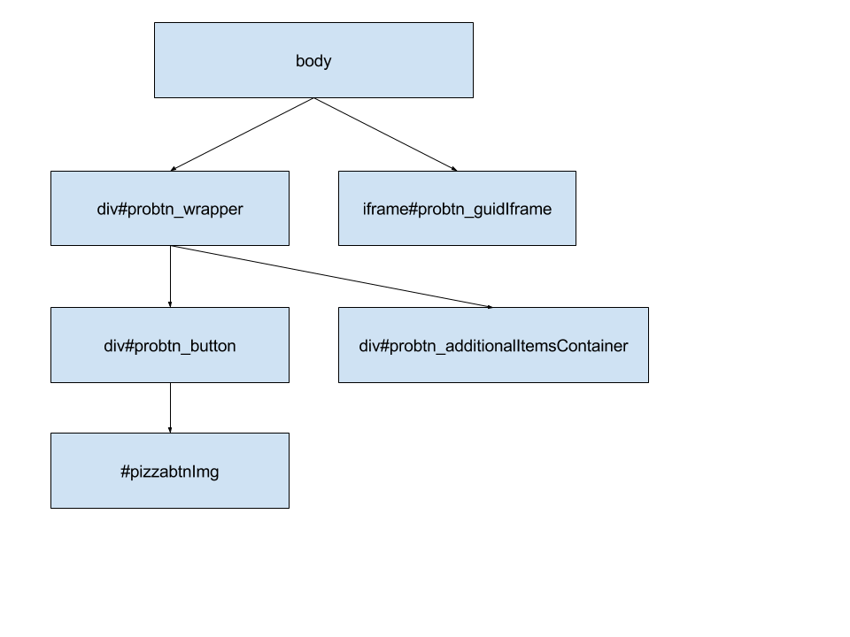

Неочевидные моменты, подсказки и иные дополнительные данные¶
Описание DOM модели кнопки¶
Базовая схема элементов кнопки
#probtn_wrapper¶
Базовый элемент, внутри которого “содержится” кнопка, активные зоны и блок с дополнительными элементами (предзагруженными картинками, трекинговыми ссылками, изображением зоны закрытия и т.д.)
iframe#probtn_guidIframe¶
Iframe, который используется для глобального отслеживания пользователя на всех сайтах, где есть код.
div#probtn_additionalItemsContainer¶
В данный div добавляются все дополнительные жлементы, что требуются для работы кнопки (предзагруженными картинками, трекинговыми ссылками, изображением зоны закрытия и т.д.)
div#probtn_button¶
Элемент, внутри которго непосредственно находятся картинкаiframe кнопки, подпись и иные элементы необходимые для корректной работы и отображения кнопки.
#pizzabtnImg¶
Картинка или iframe (c html креативом) кнопки